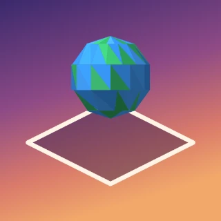
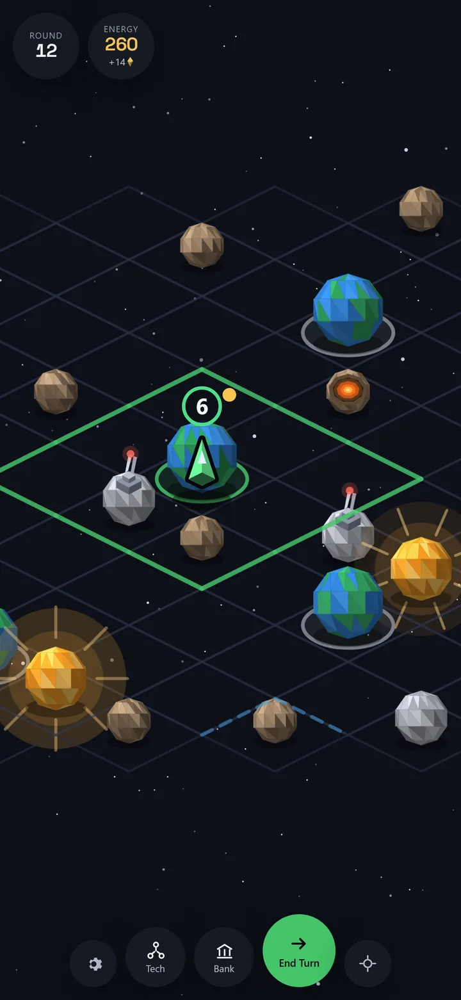

You always know what’s coming.
Frosty Robot Studio makes turn-based strategy and base defense games for phones and tablets. Both of them tell you what is about to happen, then leave the decision to you.
You get the whole board and all the time you want. Every fight tells you its result before you commit to it.
You see the wave before it reaches you, and exactly how long you have to be ready for it.

Celestile
A turn-based 4X strategy game. Claim a cluster of space one tile at a time — expand, build, research and out-think up to fourteen rival empires across an isometric board of space, asteroids, moons, planets and suns — then win by holding every planet, or by finishing ahead of all of them inside forty rounds.
- Combat
- Deterministic. The forecast above a fight is the result. No dice.
- Two ways to win
- Domination — hold every planet. Ascendancy — finish ahead inside 40 rounds.
- Choices
- 8 factions, each with one real strength and one real cost. 8 unit classes. 15 technologies.
- Plays
- Single-player and offline. No account, no connection, no chat.
- Ships in
- Nine languages, with 63 achievements and a career record that persists.

Timber Frenzy
A base defense game.
More to show when there is more to show.
One small studio
Frosty Robot Studio is independent. We build for phones first — Celestile is portrait, one-handed, and plays with no connection at all — and we finish games rather than operate them. Version 1.0 is the whole game: nothing time-gated, nothing to subscribe to.
The two things we make have the same idea underneath. A turn-based game shows you a forecast; a defense game shows you the next wave and the time left before it. Both are promises, and a game is only as good as how exactly it keeps them. Celestile keeps its one literally: the number above a fight is the number you get, every time.